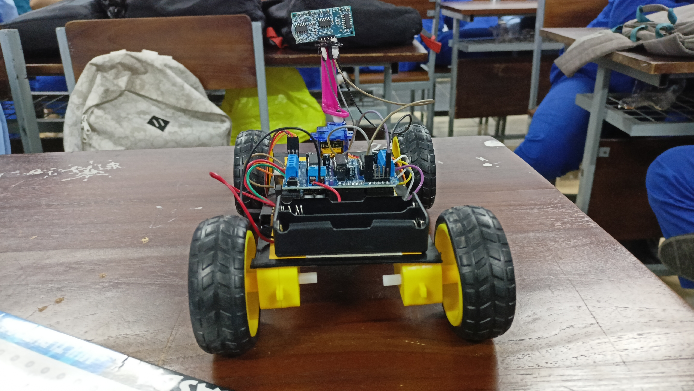
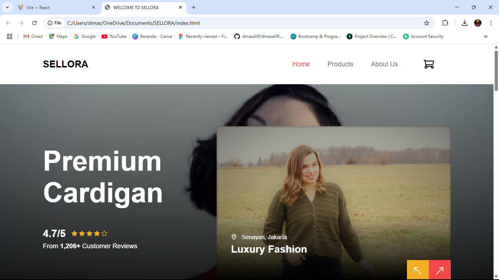
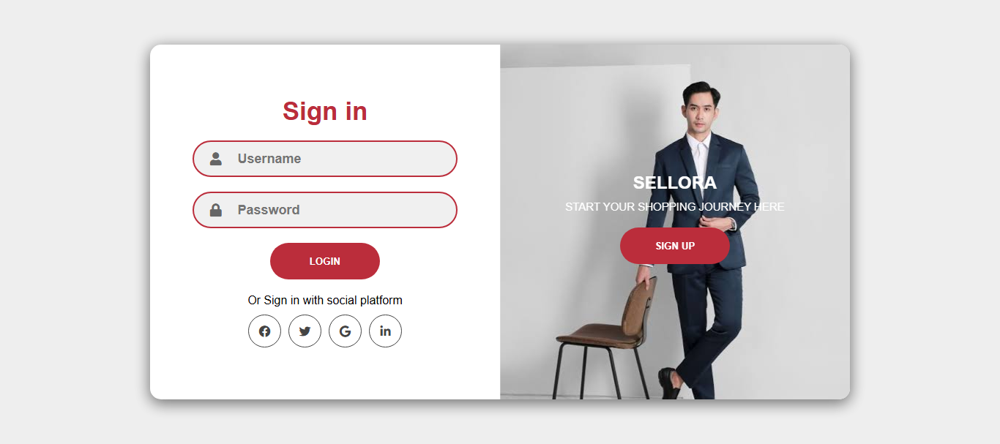

Hello,
I'm Tedi
Beginner Programmer
From Depok

An active student of the Informatics and Computer Engineering Study Program, currently in the 5th semester at Universitas Indraprasta PGRI, with a strong interest in technological innovation within digital financial transaction systems. Possesses skills in data processing, document management, and the use of administrative software such as Microsoft Office and Google Workspace. Also equipped with basic coding skills, including a solid understanding of algorithmic logic and proficiency in programming languages such as HTML, CSS, JavaScript, as well as SQL for managing and querying databases. Able to build web interfaces and develop simple logic for information systems.
I believe that every skill I learn reflects my growth and commitment in the field of technology. I have a foundational understanding of HTML and CSS, which allows me to create structured and visually appealing web pages. My knowledge of JavaScript enables me to add interactivity and functionality to enhance user experience. I am also learning and applying UI/UX design principles to ensure user-centered, accessible, and responsive designs. Additionally, I have basic proficiency in SQL, which helps me in managing, retrieving, and analyzing data efficiently from relational databases.
I am currently learning the fundamentals of Web Development with a focus on building simple and responsive websites. I have basic knowledge of HTML and CSS for creating web layouts and styling pages. I am also learning JavaScript to add interactivity and dynamic behavior to websites. In addition, I have an introductory understanding of UI/UX design principles and basic skills in SQL to perform simple data operations. I am committed to continuously improving these skills through practice and hands-on projects.
I have a basic understanding of graphic and UI design using Figma as my main tool. I use Figma to create simple interface layouts, wireframes, and prototypes for websites or mobile apps. While still at the beginner level, I am learning how to apply visual hierarchy, consistency, and user-focused esign principles in my projects. I am also exploring collaborative features in Figma to work effectively in a team setting.
I am currently learning the basics of app development, focusing on building simple web-based and mobile-friendly applications. I use HTML, CSS, and JavaScript to develop front-end interfaces, and I am starting to explore PHP and MySQL for building dynamic app features such as login systems and database integration. I also use Figma to design app layouts and user flows. While still at the beginner stage, I continue to improve my skills through small projects and hands-on practice.
This project is a wheeled robot car designed to detect and avoid obstacles automatically using an Arduino UNO microcontroller. The car uses an ultrasonic sensor (HC-SR04) mounted at the front to measure distances. When an object is detected within a certain range, the robot makes decisions to stop, turn, or change direction to avoid collision.
Sellora is a practice project developed for the Database Systems Practical Course, designed as a simple web-based outfit marketplace. The main objective of this project is to implement relational database concepts, manage product data, and connect a user interface to a back-end database using PHP and MySQL, managed through phpMyAdmin.
I created a login and registration page for the Sellora project using HTML, CSS, and JavaScript. The page has a responsive and user-friendly design, with a feature to switch between login and signup forms. I added Font Awesome icons to improve the visual appearance. JavaScript was used to make the panel transitions interactive. This project helped me learn the basics of building a user login interface.
As a beginner in the field of technology, I have worked on several small-scale academic and personal projects to strengthen my skills. These projects include building simple websites using HTML, CSS, and JavaScript, designing user interface mockups with Figma, and creating basic database systems using SQL. While these projects are still at an early stage, they have helped me understand the practical application of what I’ve learned and improved my confidence in working independently or in a team.